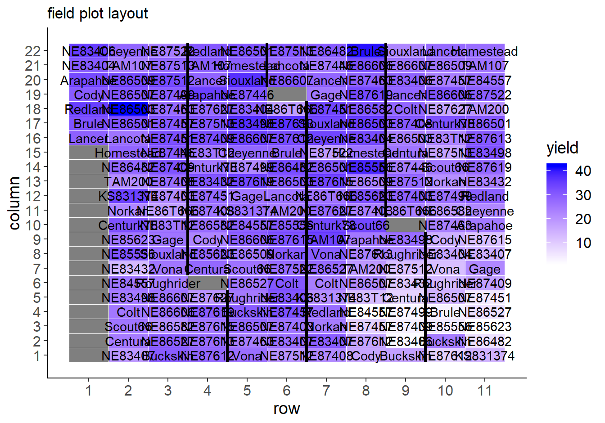
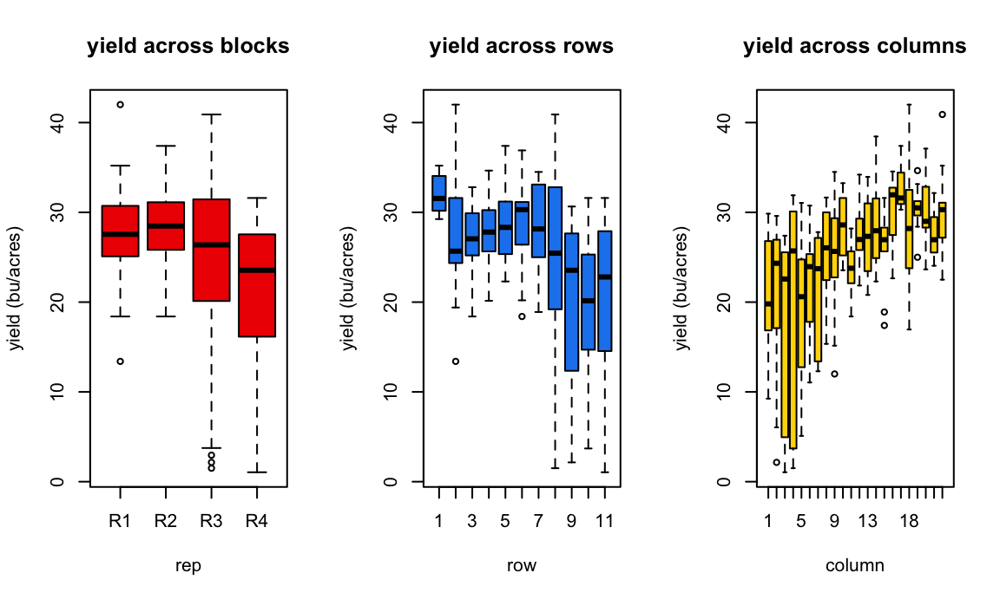
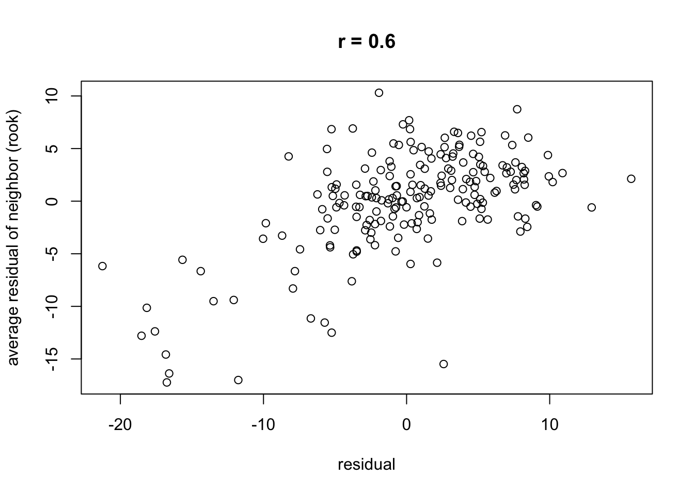
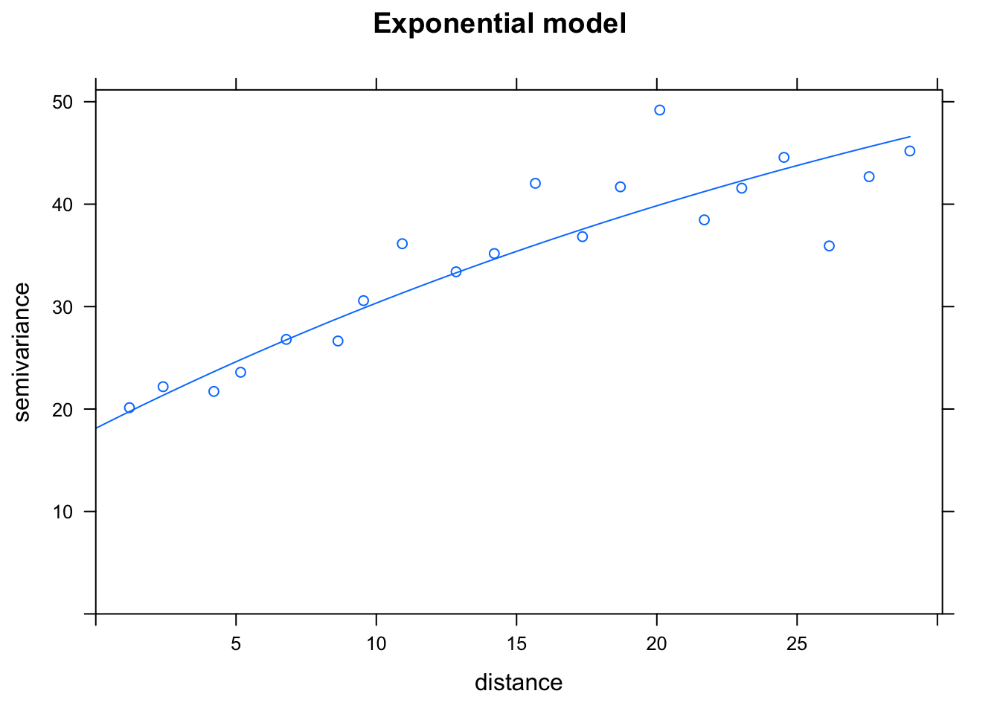
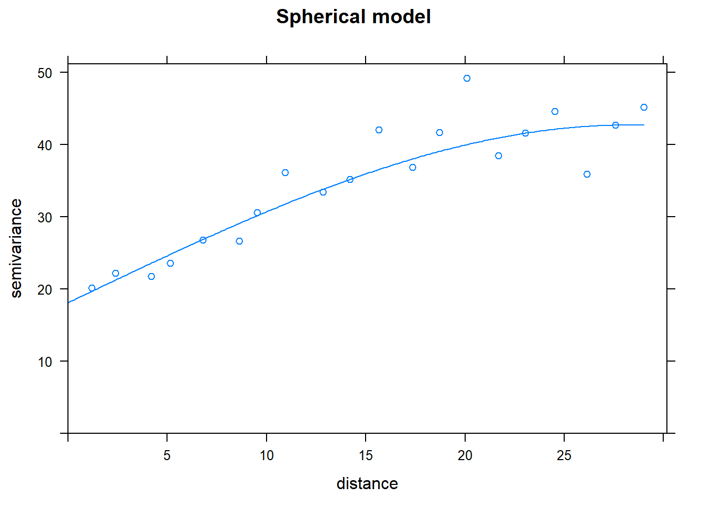
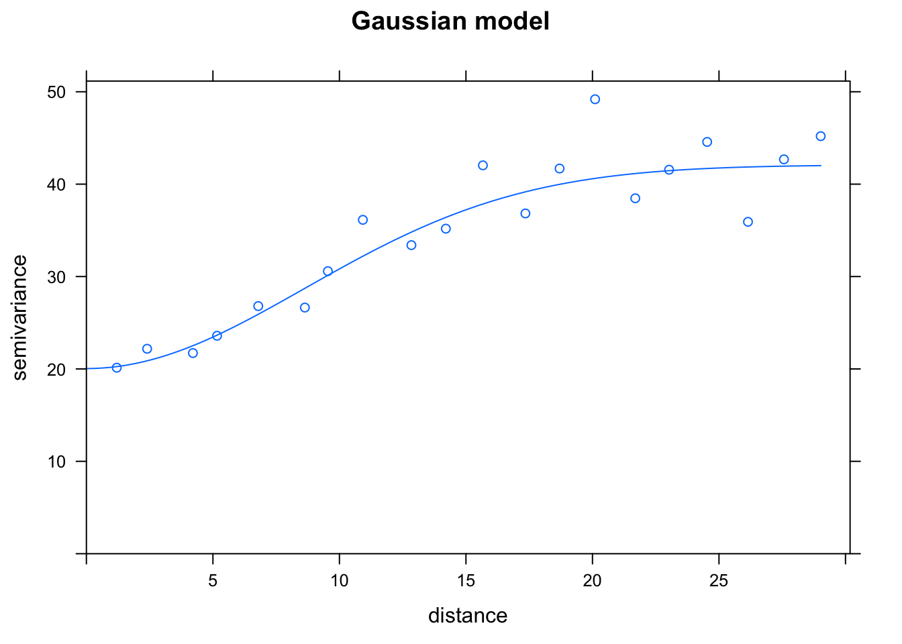

Section 4 Identifying Spatial Variation: R
4.1 Load data
This tutorial uses the Nebraska Interstate wheat trials, first published by Stroup et al in 1994 (Stroup, Baenziger, and Mulitze 1994) and reused extensively in field spatial variation studies.
library(agridat); library(dplyr); library(tidyr)
data("stroup.nin")
Nin <- stroup.nin %>% mutate(col.width = col * 1.2,
row.length = row * 4.3) %>%
mutate(name = case_when(is.na(as.character(rep)) ~ NA_character_,
TRUE ~ as.character(gen))) %>%
arrange(col, row)
Nin_na <- filter(Nin, !is.na(rep))4.1.1 Examine data
head(Nin)## gen rep yield col row col.width row.length name
## 1 Lancer <NA> NA 1 1 1.2 4.3 <NA>
## 2 NE83407 R1 19.40 1 2 1.2 8.6 NE83407
## 3 Buckskin R1 29.85 1 3 1.2 12.9 Buckskin
## 4 NE87612 R1 28.15 1 4 1.2 17.2 NE87612
## 5 Vona R2 26.80 1 5 1.2 21.5 Vona
## 6 NE87512 R2 20.20 1 6 1.2 25.8 NE87512This data set actually has no missing data – this is a balanced trial. However, there are empty fill plot with no data which creates some issues regarding NA handling.
Plot raw yield data as it appeared in the field:
library(ggplot2)
library(desplot)ggplot(Nin, aes(x = row, y = col)) +
geom_tile(aes(fill = yield), col = "white") +
geom_text(aes(label = name)) +
geom_tileborder(aes(group = 1, grp = rep), lwd = 1.2) +
scale_fill_gradient(low = "white", high = "blue") +
scale_x_continuous(breaks = seq(1,max(Nin$row), 1)) +
scale_y_continuous(breaks = 1:max(Nin$col)) +
labs(x = "row", y = "column", title = "field plot layout") +
theme_classic() +
theme(axis.text = element_text(size = 12),
axis.title = element_text(size = 14),
legend.title = element_text(size = 14),
legend.text = element_text(size = 12))
Black lines delineate the blocks.
It’s also helpful to plot raw response data:
par(mfrow=c(1,3))
boxplot(yield ~ rep, data = Nin, xlab = "rep", ylab = "yield (bu/acres)", col = "red2", main = "yield across blocks")
boxplot(yield ~ row, data = Nin, xlab = "row", ylab = "yield (bu/acres)",col = "dodgerblue2", main = "yield across rows")
boxplot(yield ~ col, data = Nin, col = "gold", xlab = "column", ylab = "yield (bu/acres)",main = "yield across columns")
par(mfrow=c(1,1))4.2 Test for spatial autocorrelation
4.2.1 Moran’s I
First, run a standard linear model of the experiment:
library(nlme)
nin.lme <- lme(yield ~ gen, random = ~1|rep,
data = Nin,
na.action = na.exclude)Next, establish and weight neighbors for each plot. In this example, only adjacent neighbors in the rook formation (see 3) are used and are weighted proportionally according to their representation as neighbors to an individual. That is, if a unit has 4 adjacent neighbors, each neighbor is weighted as 0.25. If there are only two neighbors, each is weighted 0.5.
The function cell2nb() is a function for setting neighbors when working with data laid out in a regular grid.
library(spdep)
xy_rook <- cell2nb(nrow = max(Nin$row), ncol = max(Nin$col), type="rook", torus = FALSE, legacy = FALSE) Make sure your data sorted by the variables assigned to row and col (in that order), and there is one and only one observation in the data set for each unique row/col combination. Even missing plots need a row.
Rook adjacency plot for the NIN data
library(sf)
rook_matrix <- st_as_sf(expand.grid(col=1:22, row=1:11), coords=c("col", "row"))
plot(xy_rook, coords = st_geometry(rook_matrix), points = TRUE)Figure 4.1: Rook adjacency plot for the NIN data
Each observation considers “neighbors” to be those which touch the cell in a row or column orientation, but not diagonal.
Conduct Moran’s test via standard t-test and using MC sampling.
resid_lme <- residuals(nin.lme)
names(resid_lme) <- Nin$plot
moran.test(resid_lme, nb2listw(xy_rook), na.action = na.exclude)##
## Moran I test under randomisation
##
## data: resid_lme
## weights: nb2listw(xy_rook)
## omitted: 1, 12, 23, 34, 45, 56, 59, 67, 78, 89, 100, 108, 111, 122, 133, 144, 155, 204
##
## Moran I statistic standard deviate = 8.1602, p-value < 2.2e-16
## alternative hypothesis: greater
## sample estimates:
## Moran I statistic Expectation Variance
## 0.402504491 -0.004484305 0.002487522moran.mc(resid_lme, nb2listw(xy_rook), 999, na.action = na.exclude)##
## Monte-Carlo simulation of Moran I
##
## data: resid_lme
## weights: nb2listw(xy_rook)
## omitted: 1, 12, 23, 34, 45, 56, 59, 67, 78, 89, 100, 108, 111, 122, 133, 144, 155, 204
## number of simulations + 1: 1000
##
## statistic = 0.4025, observed rank = 1000, p-value = 0.001
## alternative hypothesis: greaterPlot Spatial dependence of residuals
library(purrr)
res.nn1 <- map_dbl(xy_rook, function(j) mean(resid_lme[j]))
rc <- signif(cor(resid_lme, res.nn1, use = "pairwise.complete.obs"), 2)
plot(x = resid_lme, y = res.nn1,
main = paste0("r = ", rc), xlab = "residual", ylab = "average residual of neighbor (rook)")
4.2.2 Note on Geary’s C
At this time, the spdep function geary.test() for Geary’s C does not handle missing spatial points. It cannot be used it for the NIN data set because it contains empty plots between each block with no data available for those plots.
4.3 Empirical variogram fitting
First, create a spatial object by adding spatial coordinates to an ordinary data frame. I like to use the actual size of the plots since they are often exaggerated rectangles that have a significantly greater length than width.
Nin_spatial <- Nin_na
coordinates(Nin_spatial) <- ~ col.width + row.length
class(Nin_spatial)## [1] "SpatialPointsDataFrame"
## attr(,"package")
## [1] "sp"Set the maximum distance for calculating the variogram model (which is one-half the maximum distance between two points).
max_dist = 0.6*max(dist(coordinates(Nin_spatial)))
round(max_dist, digits = 2)## [1] 29.9Calculate semivariance for an isotropic model and plot the variogram.
library(gstat)## Warning: package 'gstat' was built under R version 4.1.1class(Nin_spatial)## [1] "SpatialPointsDataFrame"
## attr(,"package")
## [1] "sp"head(Nin_spatial)## class : SpatialPointsDataFrame
## features : 6
## extent : 1.2, 1.2, 8.6, 30.1 (xmin, xmax, ymin, ymax)
## crs : NA
## variables : 6
## names : gen, rep, yield, col, row, name
## min values : Buckskin, R1, 19.4, 1, 2, Buckskin
## max values : Vona, R3, 29.85, 1, 7, Vonaresid_var1 <- gstat::variogram(yield ~ rep + gen,
cutoff = max_dist,
width = max_dist/20, # 20 is the number of bins
data = Nin_spatial)
plot(resid_var1)
Test out correlated error models:
First, set the starting nugget values as the minimum of the semi-variance. There is likely more sophisticated methods to establish the starting value for nugget, but I have found that extracting the minimum value of the semivariance to work well as a starting point.
nugget_start <- min(resid_var1$gamma)Establish models for variogram fitting.
Nin_vgm1 <- vgm(model = "Exp", nugget = nugget_start) # exponential
Nin_vgm2 <- vgm(model = "Sph", nugget = nugget_start) # spherical
Nin_vgm3 <- vgm(model = "Gau", nugget = nugget_start) # Gaussian
Nin_vgm4 <- vgm(model = "Mat", nugget = nugget_start) # MaternFit the variograms to the data:
Nin_variofit1 <- fit.variogram(resid_var1, Nin_vgm1)
Nin_variofit2 <- fit.variogram(resid_var1, Nin_vgm2)
Nin_variofit3 <- fit.variogram(resid_var1, Nin_vgm3)
Nin_variofit4 <- fit.variogram(resid_var1, Nin_vgm4, fit.kappa = T)4.3.1 Compare variograms
Look at the results! (this is fun)
plot(resid_var1, Nin_variofit1, main = "Exponential model")
plot(resid_var1, Nin_variofit2, main = "Spherical model")
plot(resid_var1, Nin_variofit3, main = "Gaussian model")
plot(resid_var1, Nin_variofit4, main = "Matern model")
How to pick the best one model? The attribute “SSError” indicates how well each model was able to predict the binned error terms as a function of distance. However, it’s important to look at the model as well to see if the model was able to fit the data.
print("Exponential"); attr(Nin_variofit1, "SSErr")## [1] "Exponential"## [1] 1129.799print("Spherical"); attr(Nin_variofit2, "SSErr")## [1] "Spherical"## [1] 1012.76print("Gaussian"); attr(Nin_variofit3, "SSErr")## [1] "Gaussian"## [1] 752.5491print("Matern"); attr(Nin_variofit4, "SSErr")## [1] "Matern"## [1] 771.4813Nin_variofit3 had the lowest error terms, corresponding to the Gaussian model.
Results from the empirical variogram:
Nin_variofit3## model psill range
## 1 Nug 20.04106 0.00000
## 2 Gau 22.04013 12.19921The variogram parameters can be easily extracted from this table:
nugget <- Nin_variofit3$psill[1] # "measurement error"
range <- Nin_variofit3$range[2] # distance to establish independence between data points
sill <- sum(Nin_variofit3$psill) # maximum semivariance4.3.2 Explore anisotropy
Most field experiments occur on a relatively small scale,where the entire experimental layout is less than 0.25 square miles. As such, isotropic models (where spatial correlation is based on distance but not direction) are often adequate for understanding localised field heterogeneity. However, there are always exceptions where a spatial correlation in a field trail is best describe by an anistropic model.
Reestablish models for variogram fitting:
Nin_vgm1a <- vgm(model = "Exp", anis = c(90, 0.5)) # 90 refers to the angle of the main direction and 0.5 creates a second 90 degree axis of variability to estimate
Nin_vgm2a <- vgm(model = "Sph", anis = c(90, 0.5))
Nin_vgm3a <- vgm(model = "Gau", anis = c(90, 0.5))
Nin_vgm4a <- vgm(model = "Mat", anis = c(90, 0.5))Fit the variograms to the data:
Nin_variofit1a <- fit.variogram(resid_var1, Nin_vgm1a)
Nin_variofit2a <- fit.variogram(resid_var1, Nin_vgm2a)
Nin_variofit3a <- fit.variogram(resid_var1, Nin_vgm3a)
Nin_variofit4a <- fit.variogram(resid_var1, Nin_vgm4a, fit.kappa = T)
print("Exponential"); attr(Nin_variofit1a, "SSErr")## [1] "Exponential"## [1] 8387.429print("Spherical"); attr(Nin_variofit2a, "SSErr")## [1] "Spherical"## [1] 9448.75print("Gaussian"); attr(Nin_variofit3a, "SSErr")## [1] "Gaussian"## [1] 19319.19print("Matern"); attr(Nin_variofit4a, "SSErr")## [1] "Matern"## [1] 7253.594Error terms are considerably higher than in the isotropic model.
plot(resid_var1, Nin_variofit1a, main = "Exponential model")
Hmm, that plot is not very convincing.
In this field trial, there is evidence of spatial correlation as a function of distance, but there is not evidence this spatial correlation is impacted by direction.
Another reminder on field trends
It’s important to remember these methods are intended to describe localised spatial correlation. Field-wide spatial gradients, such as position on a slope, should be modelled as a separate trend.